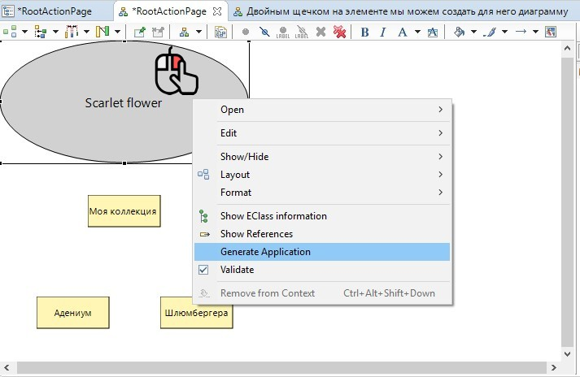

Навигационный каркас первого уровня (Header)
На данный момент мы научились генерировать страницу из корневого элемента модели. Для того чтобы на нашем сайте появились новые страницы - в модели необходимо создать новые Actions.
В корневом элементе модели мы разместили введение, которое объясняет посетителю: почему создан этот сайт.
Далее необходимо рассказать собственно о коллекции. Создадим соответствующий элемент модели. Назовем “Моя коллекция”. У правого края диаграммы мы видим палитру элементов. Выбираем в ней элемент Action, щелкаем в пустое поле диаграммы. Создается новый элемент и в окне Properties открываются его свойства.
Элементы модели созданные в диаграмме автоматически называются Action-сколько нибудь. То есть,поле Title при создании из диаграммы заполняется автоматически. При создании из дерева элементов поле Title не заполняется.
В любом случае, после того как мы создали новую Action нам необходимо в окне Properties:
- Дать ей осмысленное название в поле Title,
- Ввести осмысленное название в поле Text,
- Что нибудь написать в поле Markdown content на вкладке Markdown.
! Если поле Text не заполнено, то страница из элемента модели не сгенерируется!
Далее создадим следующие элементы модели:
{kind=link}
- Хитрости и секреты - страница о том, как правильно выращивать растения
- Как купить растения - страница о том, на каких условиях можно приобрести растения
- Адениум - это вид растений, про который мы собираемся рассказывать на сайте
- Шлюмбергера - это тоже вид растений про которые мы хотим рассказать.
Таким образом, мы получаем диаграмму, на которой есть 6 элементов: один корневой и 5 дочерних.
Выглядеть это должно вот так:

Теперь мы можем сгенерировать второй вариант нашего сайта. Для этого щелкаем правой кнопкой мыши по корневому элементу модели и выбираем в контекстном меню пункт Generate Application.

В результате генерации в области Model Explorer в папке, в которую ранее сгенерировался файл index.html появились новые файлы.
Страница index.html уже должна быть открыта в веб-браузере. Обновите ее, нажав кнопку F5 или специальную иконку в интерфейсе веб-браузера.
{kind=link}
Вы должны увидеть заново сгенерированную страницу index.html.
На странице произошли следующие изменения:
- Под хедером сформровалась горизонтальная навигационная панель. В этой панели появилась точка перехода к Action Моя коллекция
- В области шапки сайта появились точки перехода к четырем из пяти новых разделов сайта.
Мы видим, что при переходах между страницами навигационный каркас сохраняется, а содержимое контент-панели изменяется в зависимости от того, в каком разделе мы находимся.
Далее нам необходимо научиться изменять порядок расположения элементов модели (например, поменять местами элементы “Моя коллекция” и “Как купить растения”).